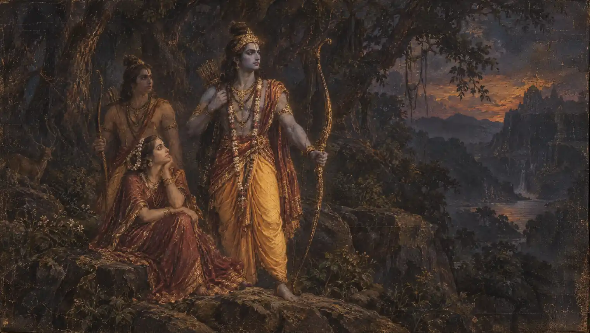

Rama, Hanuman and revered figures
Shayana Prarthana
Two traditional verses of remembrance before sleep.
Begin chantingMeaning & traditionरामं स्कन्दं हनूमन्तं वैनतेयं वृकोदरम् ।
Remember Rama, Skanda, Hanuman, Garuda and Bhima.शयने यः स्मरेन्नित्यं दुःस्वप्नं तस्य नश्यति ॥
The verse says that bad dreams depart from one who remembers them nightly at bedtime.अगस्त्यो माधवश्चैव मुचुकुन्दो महाबलः ।
Agastya, Madhava and the mighty Muchukunda,कपिलो निमिरास्तीकः सप्तैते सुखशायिनः ॥
Kapila, Nimi and Astika: the text calls these seven peaceful sleepers, although six names are printed.अर्थ
सोते समय राम, स्कन्द, हनुमान, गरुड़ और भीम का स्मरण करने वाले के दुःस्वप्न नष्ट होते हैं, ऐसा यह पारम्परिक श्लोक कहता है। अगस्त्य, माधव, बलवान मुचुकुन्द, कपिल, निमि और आस्तीक के नाम आगे आते हैं। पुस्तक सात कहती है, पर सूची में छह नाम छपे हैं।
Rāmaṃ skandaṃ hanūmantaṃ vainateyaṃ vṛkodaram
Remember Rama, Skanda, Hanuman, Garuda and Bhima.Śayane yaḥ smarennityaṃ duḥsvapnaṃ tasya naśyati
The verse says that bad dreams depart from one who remembers them nightly at bedtime.Agastyo mādhavaścaiva mucukundo mahābalaḥ
Agastya, Madhava and the mighty Muchukunda,Kapilo nimirāstīkaḥ saptaite sukhaśāyinaḥ
Kapila, Nimi and Astika: the text calls these seven peaceful sleepers, although six names are printed.Meaning
Remember Rama, Skanda, Hanuman, Garuda and Bhima. The verse says that bad dreams depart from one who remembers them nightly at bedtime. Agastya, Madhava and the mighty Muchukunda, Kapila, Nimi and Astika: the text calls these seven peaceful sleepers, although six names are printed.
Raamam skandam hanoomantam vainateyam vrikodaram
Remember Rama, Skanda, Hanuman, Garuda and Bhima.Shayane yah smarennityam duhsvapnam tasya nashyati
The verse says that bad dreams depart from one who remembers them nightly at bedtime.Agastyo maadhavashchaiva muchukundo mahaabalah
Agastya, Madhava and the mighty Muchukunda,Kapilo nimiraasteekah saptaite sukhashaayinah
Kapila, Nimi and Astika: the text calls these seven peaceful sleepers, although six names are printed.Meaning (Hinglish)
Sote samay Raam, Skand, Hanumaan, Garud aur Bheem ka smaran karne vaale ke duhsvapn nasht hote hain, aisaa yah paaramparik shlok kahtaa hai. Aage Agastya, Maadhav, Muchukund, Kapil, Nimi aur Aasteek ke naam hain. Pustak saat kahti hai, par chhah naam chhape hain.
Infallible Vedic Remedies (Mantras for Common Problems), Swami Shantananda Puri, enlarged edition 2008, contents entry 18, printed page 73. Entry 18 in the contents; the verse page itself is mislabelled 8. Both verses are included. The promise about dreams is translated as the traditional verse’s statement, not a guaranteed effect on sleep. English meanings are paraphrases; punctuation and Devanagari spelling are normalized.
Your daily mala
One chant, one bead.
Saved on this device. Return whenever you’re ready.
About the Shayana Prarthana
These bedtime verses remember Rama, Skanda, Hanuman, Garuda and Bhima, followed by seven figures traditionally associated with restful sleep. They offer a devotional way to end the day quietly.
Best time to chant: At night, immediately before going to bed.
In your practice
- Two traditional verses of remembrance before sleep.
- Repeated recitation can be used as a practice of attention and devotion.
How to chant the Shayana Prarthana
Practice directions adapted from Infallible Vedic Remedies. Contents entry 18, printed pages 72–73 (PDF pages 84–85), mislabelled 8 in the body.
- The book recommends reciting the bedtime prayers twice each night before sleep.
- Read both displayed verses as one sequence; repeat that sequence once more.
Extra notes for your practice
- The author says this practice does not require a guru as intermediary and may also be taught to children.
- The second verse says “seven” peaceful sleepers but prints six names. The page preserves the printed text and points out the inconsistency.
- The association with relief from bad dreams is a traditional belief, not a guaranteed effect on sleep.
Frequently asked questions
What does Shayana Prarthana mean?
Remember Rama, Skanda, Hanuman, Garuda and Bhima. The verse says that bad dreams depart from one who remembers them nightly at bedtime. Agastya, Madhava and the mighty Muchukunda, Kapila, Nimi and Astika: the text calls these seven peaceful sleepers, although six names are printed.
What does one count represent?
One count represents one complete recitation of all the text displayed on this page. See How to chant for guidance on repetitions and timing. You can stop at your chosen count without completing a full mala.